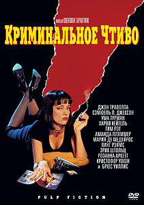
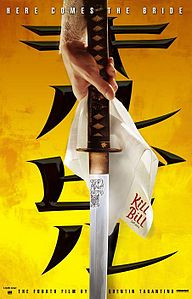
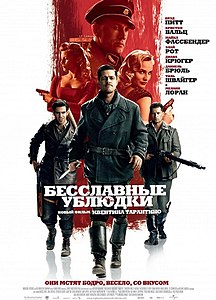

Криминальное чтиво
«Кримина́льное чти́во» (англ. Pulp Fiction) — кинофильм режиссёра Квентина Тарантино. Сюжет фильма нелинеен, как и почти во всех остальных работах Тарантино. Этот приём стал чрезвычайно популярен, породив множество подражаний во второй половине 1990-х. В фильме рассказывается несколько историй, в которых показаны ограбление кафе, философские дискуссии двух гангстеров, спасение девушки от передозировки героином и боксёр, которого задели за живое. Название является отсылкой к популярным в середине XX века в США pulp-журналам. Именно в стиле таких журналов были оформлены афиши, а позднее саундтрек, видеокассеты и DVD с фильмом.
Фильм постоянно находится в первой десятке списка 250 лучших фильмов на сайте IMDb[4]. Обладатель премии «Оскар», «BAFTA» и «Золотой глобус» в категории «Лучший оригинальный сценарий», «Золотой пальмовой ветви» Каннского кинофестиваля 1994 года и ещё более сорока кинематографических наград. Картина также имела большой успех у публики и считается важной вехой в истории кинематографа, давшей ощутимый толчок развитию независимого американского кино. В 2013 году внесён в Национальный реестр фильмов Соединённых Штатов Америки как имеющий культурное, историческое и эстетическое значение.
Вслед за предыдущим фильмом Тарантино «Бешеные псы», части сюжета «Криминального чтива» были разделены, перемешаны и показаны в «неправильном» порядке; техника, до этого использовавшаяся режиссёрами французской «Новой волны», в частности Жан-Люком Годаром и Франсуа Трюффо, а также Стэнли Кубриком в «Убийстве». Всего в сценарии можно насчитать шесть частей, при этом авторские названия имеют три из них: «Винсент Вега и жена Марселласа Уоллеса» (Vincent Vega and Marsellus Wallace’s Wife), «Золотые часы» (The Gold Watch) и «Ситуация с Бонни» (The Bonnie Situation). Первая и последняя части (Ограбление) пересекаются во времени и происходят в одном и том же месте. Две хронологически последовательные части («Винсент Вега и жена Марселласа Уоллеса» и «Золотые часы») показаны также одна за другой.
Убить Билла
«бить Билла» (англ. Kill Bill: Vol. 1) — американский криминальный боевик, первая часть одноимённой дилогии режиссёра и сценариста Квентина Тарантино с Умой Турман и Дэвидом Кэррадайном в главных ролях. Сюжет развивается нелинейно, что характерно для творчества режиссёра.
В городке Пасадена, штат Калифорния, спустя 4 с половиной года после резни в часовне «2 сосны» под именем Джинни Белл живёт Вернита Грин — одна из участниц резни. Беатрикс, вооружённая ножом, который находится в ножнах, висящих на поясе, приезжает к дому Верниты на «Шмаровозке». Беатрикс звонит в дверь. Как только Вернита открывает дверь, между двумя женщинами завязывается бой с применением ножей, сковородок и других бытовых предметов. В момент, когда обе они останавливаются, чтобы отдышаться, и готовятся к новой атаке, в доме неожиданно появляется четырёхлетняя дочь Верниты — Никки. Никки входит в гостиную, и, видя умоляющий взгляд Верниты, Беатрикс прячет свой нож за спину, то же самое делает сама Вернита. Зайдя в комнату и увидев разгром и кровь на лицах обеих женщин, девочка недоумевает, что произошло; познакомив Никки и Беатрикс, Вернита отправляет дочь в её комнату, затем просит у Мамбы прощения за то, что произошло 4 года назад, и говорит, что теперь они квиты. Беатрикс возражает, что они были бы квиты, если бы она убила мужа и дочь Верниты. Вернита угощает Беатрикс кофе, попутно предлагает встретиться ночью на футбольном поле, одетыми во всё чёрное, и закончить начатое — драться насмерть на ножах. Беатрикс соглашается, Вернита достаёт коробку с завтраком быстрого приготовления, якобы для того, чтобы приготовить Никки кашу, и стреляет в Беатрикс из пистолета, спрятанного в этой коробке. Однако Вернита промахивается, а Беатрикс выхватывает из ножен на бедре свой нож и метким броском пригвождает её к стене. Беатрикс подходит к телу Верниты, чтобы забрать свой нож, и понимает, что Никки, услыхавшая выстрел и пришедшая на кухню, видела смерть своей матери. Уходя, Беатрикс говорит девочке, что если та, когда вырастет, захочет отомстить, она будет ждать. Садясь в «Шмаровозку» и заводя двигатель, Беатрикс вспоминает слова своего учителя Пэй Мэя о том, что надо быть безжалостным к врагам.
Бесславные ублюдки
«Бесславные ублюдки» (англ. Inglourious Basterds) — фильм, снятый режиссёром Квентином Тарантино по собственному сценарию. Съёмки фильма начались осенью 2008 года во Франции и Германии, премьера состоялась на Каннском кинофестивале в 2009 году. Действие картины, в которой снялись Брэд Питт, Майк Майерс, Элай Рот и Кристоф Вальц, происходит во Франции во время Второй мировой войны.
Фильм получил преимущественно положительные отзывы кинокритиков и собрал в мировом прокате более 322 млн долларов. Картина была выдвинута на восемь премий «Оскар» (победила всего в одной номинации — премия «за лучшую мужскую роль второго плана» досталась Кристофу Вальцу, который также получил «Золотой глобус» и BAFTA), четыре премии «Золотой глобус» и шесть премий BAFTA. Актёрская работа Кристофа Вальца, исполнившего роль штандартенфюрера СС Ганса Ланды, была высоко оценена ведущими киноаналитиками мира, многие из которых признавали её «жемчужиной» фильма и «секретным оружием Тарантино»
Подводя киноитоги десятилетия, многие обозреватели включили «Бесславных ублюдков» в собственные списки лучших фильмов не только года, но и первых десяти лет XXI века[.